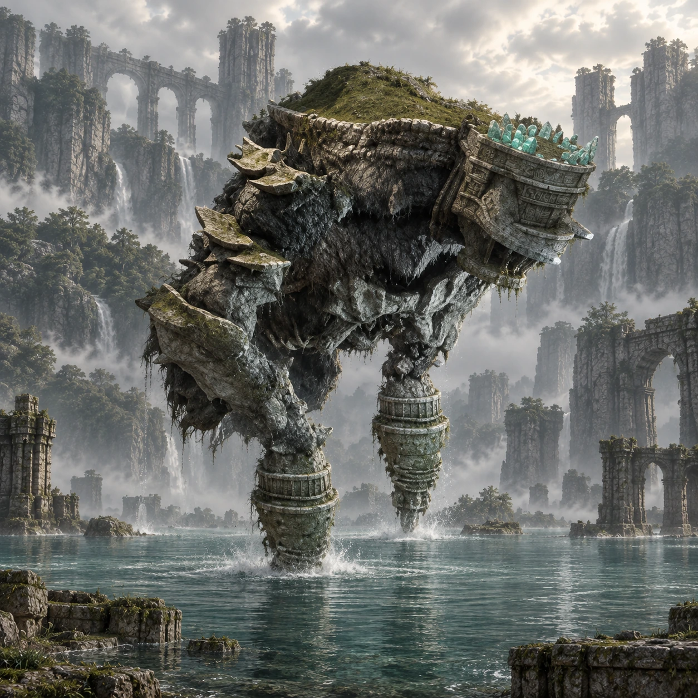

Dois nomes, duas origens
“Poseidon” é um nome de desenvolvimento. “Pelagia” é o nome popular entre os fãs, não um nome próprio apresentado durante o jogo.

Colosso 12 · Terras Proibidas
Um gigante entre ilhas de pedra.
Pelagia emerge de um lago cercado por rochas e quedas-d’água. O corpo parcialmente submerso mistura a aparência de criatura e ruína.
Conheça o gigante01 / O gigante
Pelagia tem uma anatomia incomum: cabeça sem olhos visíveis, grandes apêndices voltados para a frente e protuberâncias sobre o topo. A vegetação cobre parte de suas costas.
A superfície da água esconde suas proporções completas. As plataformas espalhadas pelo lago aproximam a arquitetura da arena das estruturas que parecem crescer no próprio colosso.
*Altura e comprimento seguem as estimativas da Colossipédia, citada nas fontes. Os valores variam entre fontes e escalas; são referências aproximadas, não medidas oficiais confirmadas.
02 / O caminho
Saia para o norte e siga pelo desvio a nordeste, atravessando a ponte rochosa e a pequena floresta.
A grande cachoeira marca a chegada. Continue pelas margens e a nado até as plataformas de pedra no lago, onde acontece o encontro.
Abrir mapa das Terras Proibidas03 / Um olhar mais atento
“Poseidon” é um nome de desenvolvimento. “Pelagia” é o nome popular entre os fãs, não um nome próprio apresentado durante o jogo.
O rosto de Pelagia não apresenta olhos aparentes, apesar de o colosso acompanhar os movimentos de Wander.
A água encobre boa parte do corpo. O que se vê acima da superfície é apenas uma fração de sua estrutura.
04 / O encontro
Algumas pistas para começar, deixando a descoberta da luta com você.
Dicas gerais para o modo Normal. A ficha não detalha todos os pontos vitais nem o desfecho do confronto.
Ficha baseada em registros da comunidade e guias de jogo. A arte é uma interpretação visual, não uma captura do jogo.